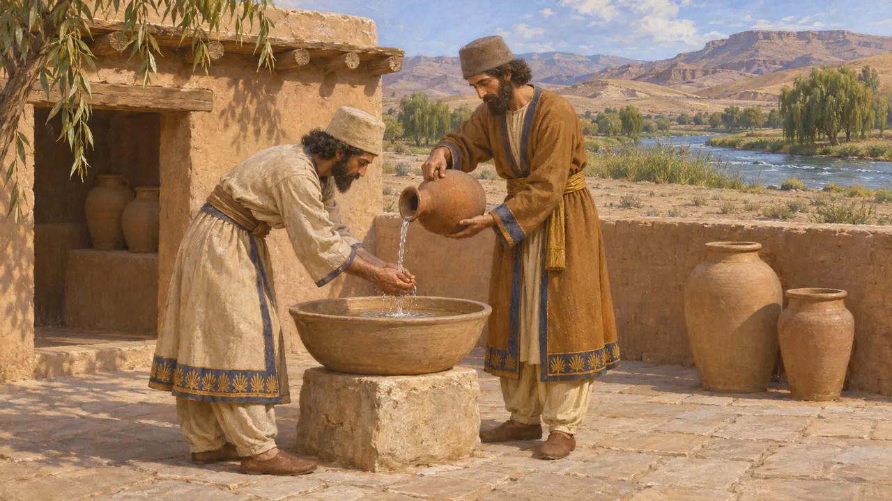
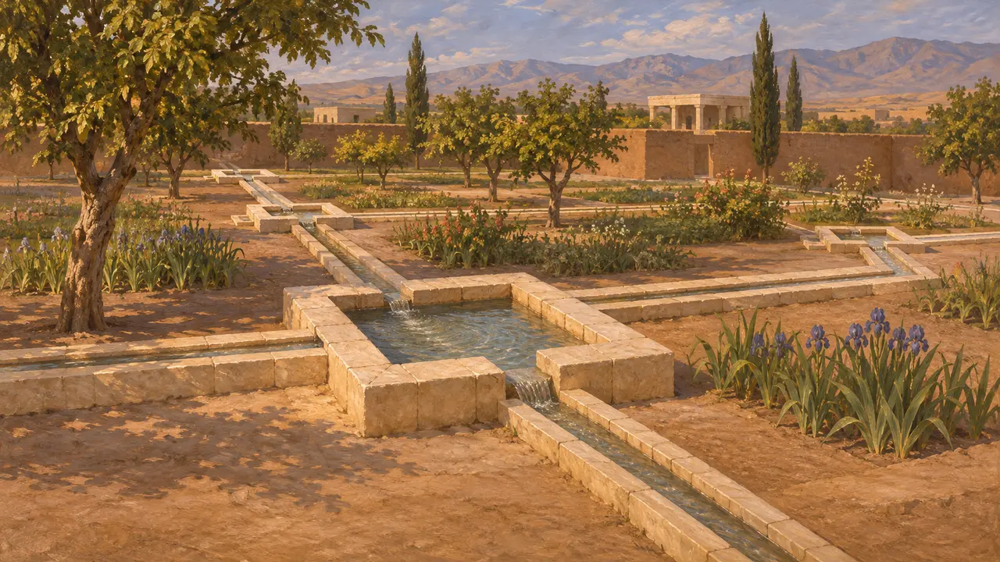
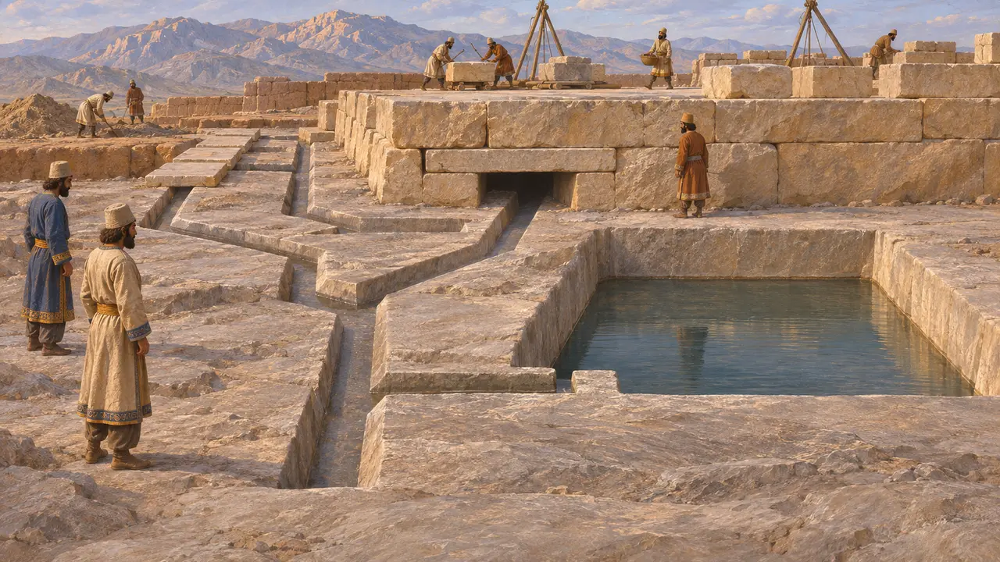
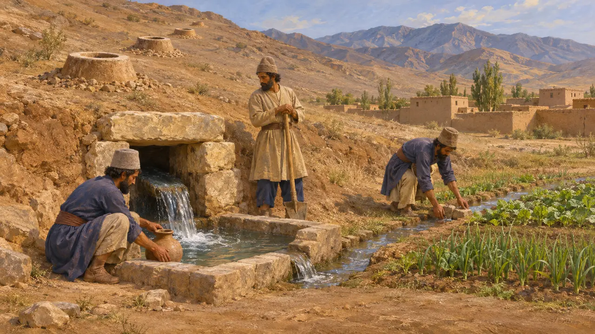
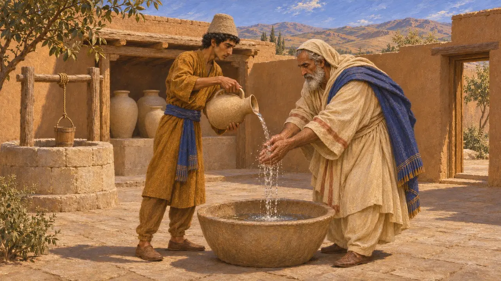

Casa da Água
Água tirada para a lavagem, segundo um costume persa, séculos VI a V AEC
Os escritores gregos notaram que os persas tratavam a água corrente com um cuidado incomum e não se lavavam num rio nem o sujavam. Por isso, a lavagem tinha de ser feita com água retirada do curso d'água. Nenhum edifício destinado a esse fim foi identificado, mas os canais de pedra de Pasárgada e os drenos de Persépolis mostram com que cuidado os construtores persas administravam a água.
No jogo: No jogo, as casas num raio de seis células se lavam numa Casa da Água, e as Residências Nobres precisam de uma. Não se conhece na Pérsia nenhuma casa pública de banhos desse tipo; por isso, o jogo transforma a regra contra a contaminação dos rios em um edifício de serviço.

Reverência pelos rios
Relato antigoHeródoto conta que os persas não urinavam nem cuspiam em um rio, não lavavam as mãos nele e não permitiam que outros o fizessem, porque honravam muito os rios. Estrabão, escrevendo mais de quatro séculos depois, acrescenta que não se banhavam na água nem lançavam nela nada morto ou impuro. Ambos são relatos de estrangeiros, mas concordam que a lavagem era mantida longe da água corrente.
Herodotus 1.138; Strabo 15.3.16

Canais e bacias de pedra em Pasárgada
Nos registrosO jardim real que Ciro traçou em Pasárgada era irrigado por canais estreitos talhados em blocos de calcário. Pequenas bacias quadradas estavam dispostas a intervalos ao longo deles. A água provavelmente vinha do rio Pulvar. Eram obras de jardim destinadas à irrigação e ao efeito ornamental, e nada indica que fossem usadas para banhos.
D. Stronach, Pasargadae, 1978

Drenos e cisternas em Persépolis
Nos registrosOs escavadores encontraram uma rede de drenos talhados no leito rochoso sob o terraço de Persépolis, planejada antes de os edifícios se erguerem sobre ela. Os drenos escoavam a água da chuva e as águas servidas, e havia também cisternas. Obras assim mostram que os construtores do Rei planejaram o abastecimento de água e a drenagem desde o início.
E. F. Schmidt, Persepolis I, 1953

Canais subterrâneos e concessões reais
DisputadoPolíbio relata que, quando os persas dominavam a Ásia, concediam o usufruto da terra por cinco gerações a quem levasse água a lugares que não a tinham. Os historiadores associam isso aos qanats, canais subterrâneos que captam água do lençol freático. Os estudiosos ainda debatem se os persas difundiram essa técnica ou se ela era mais antiga e local, e como datar canais semelhantes encontrados nos oásis ocidentais do Egito.
Polybius 10.28; P. Briant, From Cyrus to Alexander, 2002

Leis de pureza posteriores
DisputadoTextos zoroastrianos como o Videvdad estabelecem regras rígidas contra a poluição da água. Eles foram postos por escrito muitos séculos depois dos reis aquemênidas. Os historiadores discordam sobre até que ponto essas regras refletem a prática persa no tempo de Ciro e Dario. Os relatos gregos são mais próximos no tempo, mas descrevem o costume visto de fora.
P. Briant, From Cyrus to Alexander, 2002
Fontes
- Herodotus 1.138
- Strabo 15.3.16
- D. Stronach, Pasargadae, 1978
- E. F. Schmidt, Persepolis I, 1953
- Polybius 10.28
- P. Briant, From Cyrus to Alexander, 2002